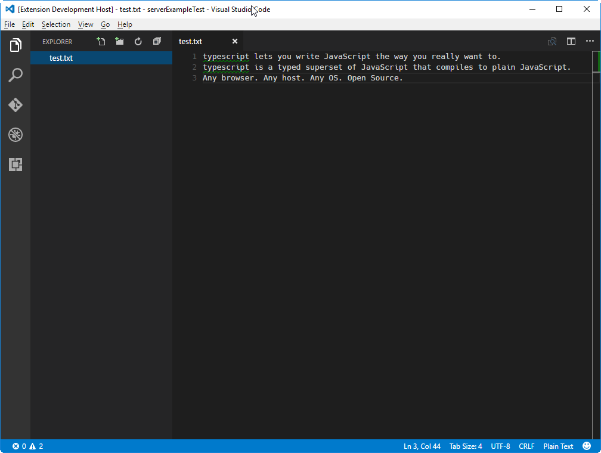
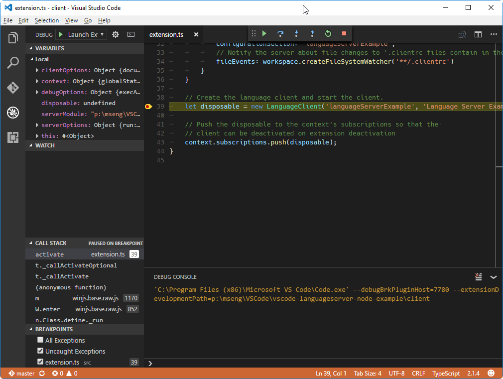
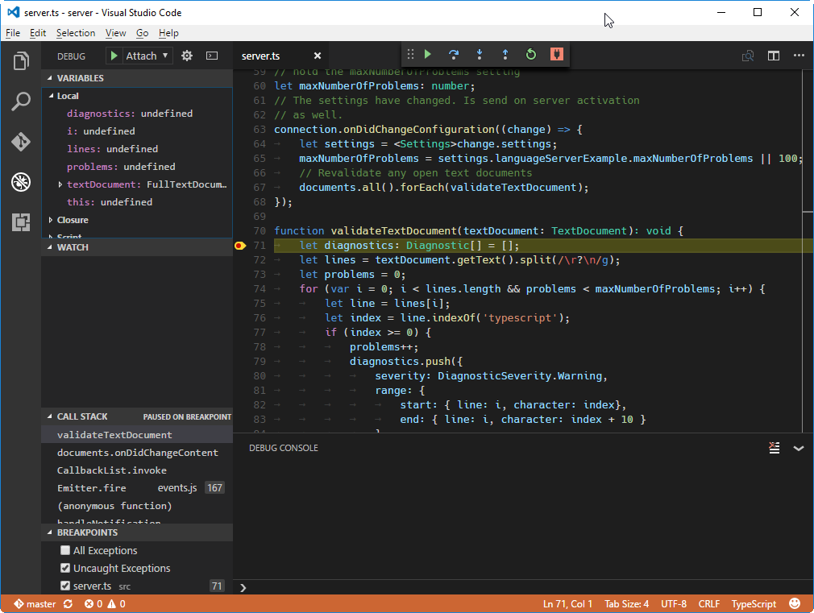
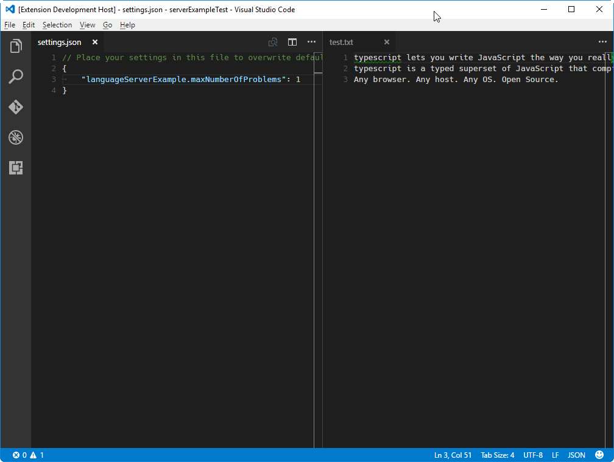
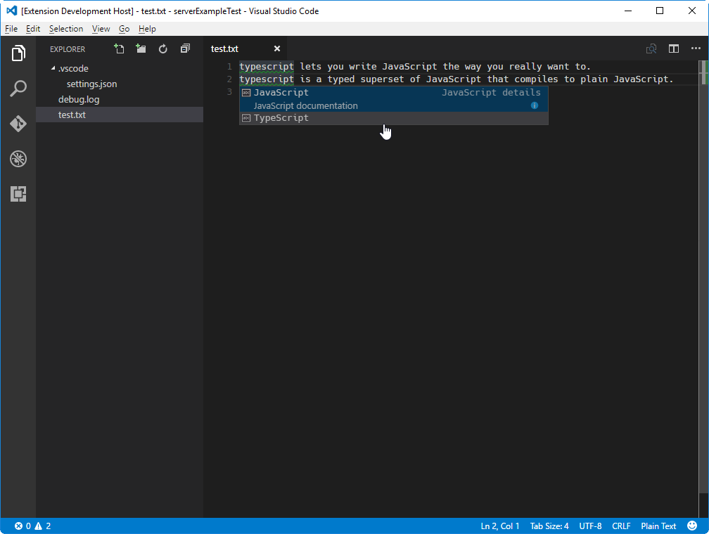

Example - Language Server
Language servers allow you to add your own validation logic to files open in VS Code. Typically you just validate programming languages. However validating other file types is useful as well. A language server could, for example, check files for inappropriate language.
In general, validating a programming language can be
expensive. Especially when validation requires parsing
multiple files and building up abstract syntax trees. To avoid
that performance cost, language servers in VS Code are
executed in a separate process. This architecture also makes
it possible that language servers can be written in other
languages besides TypeScript/JavaScript and that they can
support expensive additional language features like code
completion or Find All References.
The remaining document assumes that you are familiar with normal extension development for VS Code.
Implement your own Language Server
Language servers can be implemented in any language and follow the Language Server Protocol. However, right now VS Code only provides libraries for Node.js. Additional libraries will follow in the future. A good starting point for a language server implementation in Node.js is the example repository VS Code extension samples. This repository contains 3 different Language Server samples:
- lsp-sample: Demos how to write a basic language server.
- lsp-multi-root-sample: Demos how to write a language server which is multi workspace folder aware.
- lsp-multi-server-sample: Demos how to write a language server that start a different server instance per workspace folder.
The reminder of the document explains the code in the lsp-sample. The other two examples add additional aspects using the same code base as explained in this example.
Clone the repository and then do:
> cd lsp-sample
> npm install
> code .
The above installs all dependencies and opens one VS Code instances containing both the client and server code.
Explaining the 'Client'
The client is actually a normal VS Code extension. It contains
a package.json file in the client folder of the
workspace. There are three interesting sections of that file.
First look the activationEvents:
"activationEvents": [
"onLanguage:plaintext"
]
This section tells VS Code to activate the extension as soon
as a plain text file is opened (e.g. a file with the extension
.txt).
Next look at the configuration section:
"configuration": {
"type": "object",
"title": "Example configuration",
"properties": {
"lspSample.maxNumberOfProblems": {
"type": "number",
"default": 100,
"description": "Controls the maximum number of problems produced by the server."
}
}
}
This section contributes configuration settings
to VS Code. The example will explain how these settings are
sent over to the language server on startup and on every
change of the settings.
The last part adds a dependency to the
vscode extension host API and the
vscode-languageclient library:
"dependencies": {
"vscode": "^1.1.5",
"vscode-languageclient": "^3.3.0"
}
As mentioned, the client is implemented as a normal VS Code extension.
Below is the content of the corresponding extension.ts file:
/* --------------------------------------------------------------------------------------------
* Copyright (c) Microsoft Corporation. All rights reserved.
* Licensed under the MIT License. See License.txt in the project root for license information.
* ------------------------------------------------------------------------------------------ */
'use strict';
import * as path from 'path';
import { workspace, ExtensionContext } from 'vscode';
import { LanguageClient, LanguageClientOptions, ServerOptions, TransportKind } from 'vscode-languageclient';
export function activate(context: ExtensionContext) {
// The server is implemented in node
let serverModule = context.asAbsolutePath(path.join('server', 'server.js'));
// The debug options for the server
let debugOptions = { execArgv: ["--nolazy", "--debug=6009"] };
// If the extension is launched in debug mode then the debug server options are used
// Otherwise the run options are used
let serverOptions: ServerOptions = {
run : { module: serverModule, transport: TransportKind.ipc },
debug: { module: serverModule, transport: TransportKind.ipc, options: debugOptions }
}
// Options to control the language client
let clientOptions: LanguageClientOptions = {
// Register the server for plain text documents
documentSelector: [{scheme: 'file', language: 'plaintext'}],
synchronize: {
// Synchronize the setting section 'languageServerExample' to the server
configurationSection: 'lspSample',
// Notify the server about file changes to '.clientrc files contain in the workspace
fileEvents: workspace.createFileSystemWatcher('**/.clientrc')
}
}
// Create the language client and start the client.
let disposable = new LanguageClient('lspSample', 'Language Server Example', serverOptions, clientOptions).start();
// Push the disposable to the context's subscriptions so that the
// client can be deactivated on extension deactivation
context.subscriptions.push(disposable);
}
Explaining the 'Server'
Note: The 'Server' implementation cloned from the GitHub repository has the final walkthrough implementation. To follow the walkthrough, you can create a new
server.tsor modify the contents of the cloned version.
In the example, the server is also implemented in TypeScript and executed using Node.js. Since VS Code already ships with a Node.js runtime, there is no need to provide your own, unless you have very specific requirements for the runtime.
The interesting section in the server's
package.json file is:
"dependencies": {
"vscode-languageserver": "^3.3.0"
}
This pulls in the vscode-languageserver library.
Below is a server implementation that uses the provided simple text document manager which synchronizes text documents by always sending the file's full content from VS Code to the server.
/* --------------------------------------------------------------------------------------------
* Copyright (c) Microsoft Corporation. All rights reserved.
* Licensed under the MIT License. See License.txt in the project root for license information.
* ------------------------------------------------------------------------------------------ */
'use strict';
import {
IPCMessageReader, IPCMessageWriter, createConnection, IConnection, TextDocuments, TextDocument,
Diagnostic, DiagnosticSeverity, InitializeResult, TextDocumentPositionParams, CompletionItem,
CompletionItemKind
} from 'vscode-languageserver';
// Create a connection for the server. The connection uses Node's IPC as a transport
let connection: IConnection = createConnection(new IPCMessageReader(process), new IPCMessageWriter(process));
// Create a simple text document manager. The text document manager
// supports full document sync only
let documents: TextDocuments = new TextDocuments();
// Make the text document manager listen on the connection
// for open, change and close text document events
documents.listen(connection);
// After the server has started the client sends an initilize request. The server receives
// in the passed params the rootPath of the workspace plus the client capabilites.
let workspaceRoot: string;
connection.onInitialize((params): InitializeResult => {
workspaceRoot = params.rootPath;
return {
capabilities: {
// Tell the client that the server works in FULL text document sync mode
textDocumentSync: documents.syncKind,
// Tell the client that the server support code complete
completionProvider: {
resolveProvider: true
}
}
}
});
// The content of a text document has changed. This event is emitted
// when the text document first opened or when its content has changed.
documents.onDidChangeContent((change) => {
validateTextDocument(change.document);
});
// The settings interface describe the server relevant settings part
interface Settings {
lspSample: ExampleSettings;
}
// These are the example settings we defined in the client's package.json
// file
interface ExampleSettings {
maxNumberOfProblems: number;
}
// hold the maxNumberOfProblems setting
let maxNumberOfProblems: number;
// The settings have changed. Is send on server activation
// as well.
connection.onDidChangeConfiguration((change) => {
let settings = <Settings>change.settings;
maxNumberOfProblems = settings.lspSample.maxNumberOfProblems || 100;
// Revalidate any open text documents
documents.all().forEach(validateTextDocument);
});
function validateTextDocument(textDocument: TextDocument): void {
let diagnostics: Diagnostic[] = [];
let lines = textDocument.getText().split(/\r?\n/g);
let problems = 0;
for (var i = 0; i < lines.length && problems < maxNumberOfProblems; i++) {
let line = lines[i];
let index = line.indexOf('typescript');
if (index >= 0) {
problems++;
diagnostics.push({
severity: DiagnosticSeverity.Warning,
range: {
start: { line: i, character: index },
end: { line: i, character: index + 10 }
},
message: `${line.substr(index, 10)} should be spelled TypeScript`,
source: 'ex'
});
}
}
// Send the computed diagnostics to VSCode.
connection.sendDiagnostics({ uri: textDocument.uri, diagnostics });
}
connection.onDidChangeWatchedFiles((_change) => {
// Monitored files have change in VSCode
connection.console.log('We recevied an file change event');
});
// This handler provides the initial list of the completion items.
connection.onCompletion((_textDocumentPosition: TextDocumentPositionParams): CompletionItem[] => {
// The pass parameter contains the position of the text document in
// which code complete got requested. For the example we ignore this
// info and always provide the same completion items.
return [
{
label: 'TypeScript',
kind: CompletionItemKind.Text,
data: 1
},
{
label: 'JavaScript',
kind: CompletionItemKind.Text,
data: 2
}
]
});
// This handler resolve additional information for the item selected in
// the completion list.
connection.onCompletionResolve((item: CompletionItem): CompletionItem => {
if (item.data === 1) {
item.detail = 'TypeScript details',
item.documentation = 'TypeScript documentation'
} else if (item.data === 2) {
item.detail = 'JavaScript details',
item.documentation = 'JavaScript documentation'
}
return item;
});
/*
connection.onDidOpenTextDocument((params) => {
// A text document got opened in VSCode.
// params.uri uniquely identifies the document. For documents store on disk this is a file URI.
// params.text the initial full content of the document.
connection.console.log(`${params.textDocument.uri} opened.`);
});
connection.onDidChangeTextDocument((params) => {
// The content of a text document did change in VSCode.
// params.uri uniquely identifies the document.
// params.contentChanges describe the content changes to the document.
connection.console.log(`${params.textDocument.uri} changed: ${JSON.stringify(params.contentChanges)}`);
});
connection.onDidCloseTextDocument((params) => {
// A text document got closed in VSCode.
// params.uri uniquely identifies the document.
connection.console.log(`${params.textDocument.uri} closed.`);
});
*/
// Listen on the connection
connection.listen();
Adding a Simple Validation
To add document validation to the server, we add a listener to
the text document manager that gets called whenever the
content of a text document changes. It is then up to the
server to decide when the best time is to validate a document.
In the example implementation, the server validates the plain
text document and flags all occurrences of
typescript with a message to spell it
TypeScript. The corresponding code snippet looks
like this:
// The content of a text document has changed. This event is emitted
// when the text document first opened or when its content has changed.
documents.onDidChangeContent((change) => {
let diagnostics: Diagnostic[] = [];
let lines = change.document.getText().split(/\r?\n/g);
lines.forEach((line, i) => {
let index = line.indexOf('typescript');
if (index >= 0) {
diagnostics.push({
severity: DiagnosticSeverity.Warning,
range: {
start: { line: i, character: index},
end: { line: i, character: index + 10 }
},
message: `${line.substr(index, 10)} should be spelled TypeScript`,
source: 'ex'
});
}
})
// Send the computed diagnostics to VS Code.
connection.sendDiagnostics({ uri: change.document.uri, diagnostics });
});
Diagnostics Tips and Tricks!
- If the start and end positions are the same, VS Code will squiggle the word at that position.
- If you want to squiggle until the end of the line, then set the character of the end position to Number.MAX_VALUE.
To test the language server do the following:
-
press
kb(workbench.action.tasks.build)to start the build task. The task compiles both the client and the server. -
open the debug viewlet, select the
Launch Clientlaunch configuration and press theStart Debuggingbutton to launch an additionalExtension Development Hostinstance of VS Code that executes the extension code. - Create a test.txt file in the root folder and paste the following content:
typescript lets you write JavaScript the way you really want to.
typescript is a typed superset of JavaScript that compiles to plain JavaScript.
Any browser. Any host. Any OS. Open Source.
The Extension Development Host instance will then
look like this:

Debugging both Client and Server
Debugging the client code is as easy as debugging a normal
extension. Set a breakpoint in the client code and debug the
extension by pressing
kb(workbench.action.debug.start). For a detailed
description about launching and debugging an extension see
Running and Debugging Your Extension.

Since the server is started by the
LanguageClient running in the extension (client),
we need to attach a debugger to the running server. To do so,
switch to the Debug viewlet and select the launch
configuration Attach to Server and press
kb(workbench.action.debug.start). This will
attach the debugger to the server.

Using Configuration Settings in the Server
When writing the client part of the extension, we already
defined a setting to control the maximum numbers of problems
reported. We also instructed the
LanguageClient to sync these settings to the
server using the synchronization configuration in the
LanguageClientOptions:
synchronize: {
// Synchronize the setting section 'languageClientExample' to the server
configurationSection: 'lspSample',
// Notify the server about file changes to '.clientrc files contain in the workspace
fileEvents: workspace.createFileSystemWatcher('**/.clientrc')
}
The only thing we need to do now is to listen to configuration
changes on the server side and if a settings changes,
revalidate the open text documents. To be able to reuse the
validate logic of the document change event handling, we
extract the code into a
validateTextDocument function and modify the code
to honor a maxNumberOfProblems variable:
function validateTextDocument(textDocument: TextDocument): void {
let diagnostics: Diagnostic[] = [];
let lines = textDocument.getText().split(/\r?\n/g);
let problems = 0;
for (var i = 0; i < lines.length && problems < maxNumberOfProblems; i++) {
let line = lines[i];
let index = line.indexOf('typescript');
if (index >= 0) {
problems++;
diagnostics.push({
severity: DiagnosticSeverity.Warning,
range: {
start: { line: i, character: index},
end: { line: i, character: index + 10 }
},
message: `${line.substr(index, 10)} should be spelled TypeScript`,
source: 'ex'
});
}
}
// Send the computed diagnostics to VS Code.
connection.sendDiagnostics({ uri: textDocument.uri, diagnostics });
}
The handling of the configuration change is done by adding a notification handler for configuration changes to the connection. The corresponding code looks like this:
// The settings interface describe the server relevant settings part
interface Settings {
lspSample: ExampleSettings;
}
// These are the example settings we defined in the client's package.json
// file
interface ExampleSettings {
maxNumberOfProblems: number;
}
// hold the maxNumberOfProblems setting
let maxNumberOfProblems: number;
// The settings have changed. Is send on server activation
// as well.
connection.onDidChangeConfiguration((change) => {
let settings = <Settings>change.settings;
maxNumberOfProblems = settings.languageServerExample.maxNumberOfProblems || 100;
// Revalidate any open text documents
documents.all().forEach(validateTextDocument);
});
Starting the client again and changing the setting to maximum report 1 problem results in the following validation:

Adding additional Language Features
The first interesting feature a language server usually implements is validation of documents. In that sense, even a linter counts as a language server and in VS Code linters are usually implemented as language servers (see eslint and jshint for examples). But there is more to language servers. They can provide code complete, Find All References or Go To Definition. The example code below adds code completion to the server. It proposes the two words 'TypeScript' and 'JavaScript'.
// This handler provides the initial list of the completion items.
connection.onCompletion((textDocumentPosition: TextDocumentPositionParams): CompletionItem[] => {
// The pass parameter contains the position of the text document in
// which code complete got requested. For the example we ignore this
// info and always provide the same completion items.
return [
{
label: 'TypeScript',
kind: CompletionItemKind.Text,
data: 1
},
{
label: 'JavaScript',
kind: CompletionItemKind.Text,
data: 2
}
]
});
// This handler resolve additional information for the item selected in
// the completion list.
connection.onCompletionResolve((item: CompletionItem): CompletionItem => {
if (item.data === 1) {
item.detail = 'TypeScript details',
item.documentation = 'TypeScript documentation'
} else if (item.data === 2) {
item.detail = 'JavaScript details',
item.documentation = 'JavaScript documentation'
}
return item;
});
The data fields is used to uniquely identify a
completion item in the resolve handler. The data property is
transparent for the protocol. Since the underlying message
passing protocol is JSON based, the data field should only
hold data that is serializable to and from JSON.
All that is missing is to tell VS Code that the server support code completion requests. To do so, flag the corresponding capability in the initialize handler:
connection.onInitialize((params): InitializeResult => {
...
return {
capabilities: {
...
// Tell the client that the server support code complete
completionProvider: {
resolveProvider: true
}
}
}
});
The screen shot below shows the completed code running on a plain text file:

Additional Language Server features
The following language features are currently supported in a language server along with code completions:
- Document Highlights: highlights all 'equal' symbols in a text document.
- Hover: provides hover information for a symbol selected in a text document.
- Signature Help: provides signature help for a symbol selected in a text document.
- Goto Definition: provides go to definition support for a symbol selected in a text document.
- Find References: finds all project-wide references for a symbol selected in a text document.
- List Document Symbols: lists all symbols defined in a text document.
- List Workspace Symbols: lists all project-wide symbols.
- Code Actions: compute commands for a given text document and range.
- CodeLens: compute CodeLens statistics for a given text document.
- Document Formatting: this includes formatting of whole documents, document ranges and formatting on type.
- Rename: project-wide rename of a symbol.
- Document Links: compute and resolve links inside a document.
The Language Extension Guidelines topic describes each of the language features above and provides guidance on how to implement them either through the language server protocol or by using the extensibility API directly from your extension.
Incremental Text Document Synchronization
The example uses the simple text document manager provided by
the vscode-languageserver module to synchronize
documents between VS Code and the language server.
This has two drawbacks:
- Lots of data transfer since the whole content of a text document is sent to the server repeatedly.
- If an existing language library is used, such libraries usually support incremental document updates to avoid unnecessary parsing and abstract syntax tree creation.
The protocol therefore supports incremental document synchronization as well.
To make use of incremental document synchronization, a server needs to install three notification handlers:
- onDidOpenTextDocument: is called when a text document is opened in VS Code.
- onDidChangeTextDocument: is called when the content of a text document changes in VS Code.
- onDidCloseTextDocument: is called when a text document is closed in VS Code.
Below is a code snippet that illustrates how to hook these notification handlers on a connection and how to return the right capability on initialize:
connection.onInitialize((params): InitializeResult => {
...
return {
capabilities: {
// Enable incremental document sync
textDocumentSync: TextDocumentSyncKind.Incremental,
...
}
}
});
connection.onDidOpenTextDocument((params) => {
// A text document got opened in VS Code.
// params.uri uniquely identifies the document. For documents store on disk this is a file URI.
// params.text the initial full content of the document.
});
connection.onDidChangeTextDocument((params) => {
// The content of a text document did change in VS Code.
// params.uri uniquely identifies the document.
// params.contentChanges describe the content changes to the document.
});
connection.onDidCloseTextDocument((params) => {
// A text document got closed in VS Code.
// params.uri uniquely identifies the document.
});
Next Steps
To learn more about VS Code's extensibility model, try these topics:
- vscode API Reference - Learn about deep language integration with VS Code language services.
- Language Extension Guideline - A guide to implementing VS Code's rich language features.
- Additional Extension Examples - Take a look at our list of example extension projects.
Common Questions
Q: When I try to attach to the server, I get "cannot connect to runtime process (timeout after 5000ms)"?
A: You will see this timeout error if the server isn't running when you try to attach the debugger. The client starts the language server so make sure you have started the client in order to have a running server. You may also need to disable your client breakpoints if they are interfering with starting the server.